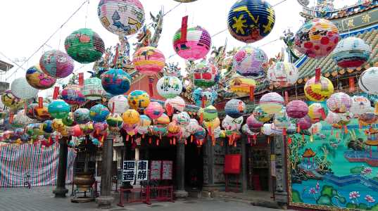
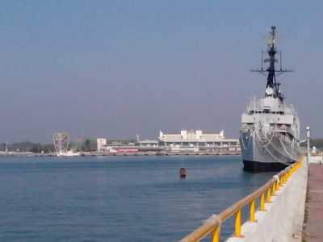
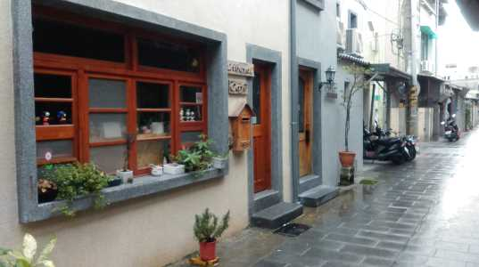
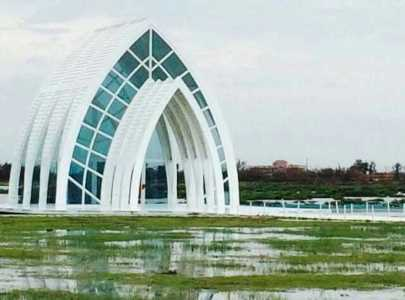
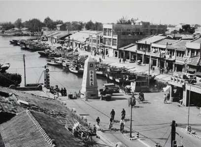
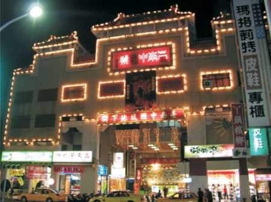
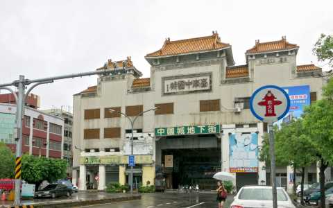

關於台南
INTRODUCE
台南市位於西南部的嘉南平原上，早年曾是全台政治、經濟重鎮的所在。身為台灣第一個發展文明的都市，歷經了荷蘭、日本等國的統治，因此台南有著台灣其他城市所沒有的文化內涵。
其所留存的古蹟全台首屈一指，美食小吃不勝枚舉，街道巷弄別有一番風情。台南的美，值得每個人細細的品味一番。
私房台南
SECRET
國華街三段與郡緯街交接口

台南市安平區光州路3號

台南市信義街與文賢路交叉口

北門水晶教堂

奇美博物館
台南小故事
HISTORY

台南縣市變遷

原是個漁港，但臺南運河因淤積問題使得其不再具航運功能。因此填河造陸，興建為大型購物商場。在當時成為一個台南重要商圈之一，內設有美食街與戲院，是人民休閒娛樂的好處所。

因海安路拓寬計畫啟用，中國城與中正路的人潮被截斷，走到中國城必須繞路。因此人潮逐漸衰減，轉而沒落。後期約剩戲院仍有客源，但地下街繁華不再。

政府實行「運河星鑽」計畫，目標為：美化運河並拆除中國城，發展觀光特色。2014年實施爆破計畫，使其回歸落日大道，亦使安平運河及安平港合為一體，讓市民有機會遠眺夕陽之美。


聯絡我們
CONTACT


※頁面上些許照片取自google，如有版權問題歡迎隨時聯絡，必定盡力配合，感謝。
© Copyright c-week.elebymax.net 2016